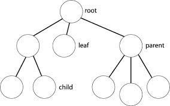

JS sous un nouvel Angle
redécouvrez les joies du développement front-end
(et JS) avec Angular
Créé par Noël Macé & Sylvain Bigonneau
Vous avez dit JavaScript ?
... jusqu'à aujourd'hui
SPA & Extended web
Let's go !
premier contact avec AngularJS
- étendre l'HTML grâce aux directives
- un peu de 2 way data-binding ...
- un peu de logique avec les services
- faire un appel ajax
Component Architecture

EcmaScript 2015
class et arrow functions
et enfin ...
TypeScript et Angular 2
Et ce n'est que le début !
Nous n'avons pas pu évoquer :
- un grand nombre de fonctionnalités d'Angular, tels que les resources et router(s)
- le grand nombre d'extensions à Angular
- toutes les joies d'Angular 2
- les Web Components, Shadow Dom, Progressive web apps, Polymer, etc ...